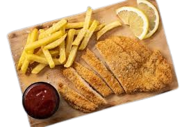

Milanesa
Home

Milanesa recipe
- 4 thin beef steaks
- 2 eggs, beaten
- 1 cup breadcrumbs
- Salt and pepper to taste
- Oil for frying or olive oil for baking
Preparation steps
- Season the steaks with salt and pepper on both sides
- Dip each steak in the beaten eggs
- Coat with breadcrumbs, pressing firmly so they stick
- Fried: Heat plenty of oil in a pan and fry each milanesa for 3-4 minutes per side until golden and crispy
- Baked: Place on a baking tray, drizzle with olive oil and bake at 200°C for 20 minutes, flipping halfway
through
- Serve hot and enjoy! 🍽️